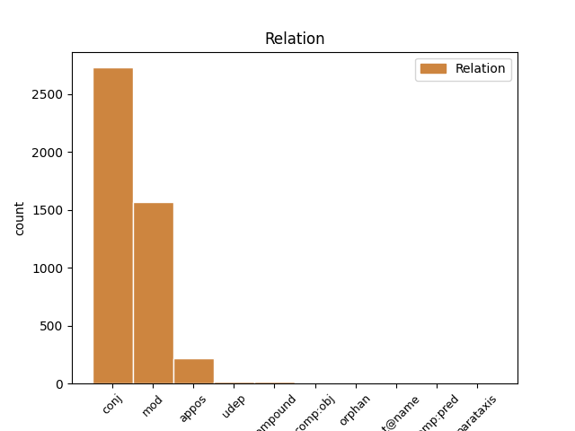
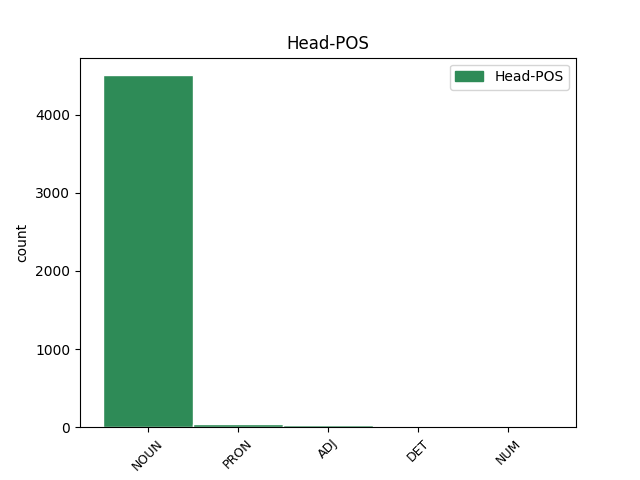
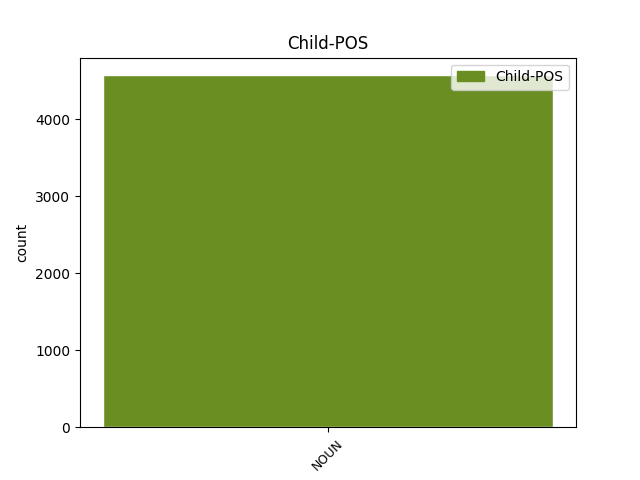

Distribution of features within this leaf



Agreement Rules sorted by frequency.
When the head token is NOUN and the dependent token is NOUN.
1 Du _ _ _ _ 0 _ _ _
2 må _ _ _ _ 0 _ _ _
3 være _ _ _ _ 0 _ _ _
4 innstilt _ _ _ _ 0 _ _ _
5 på _ _ _ _ 0 _ _ _
6 at _ _ _ _ 0 _ _ _
7 du _ _ _ _ 0 _ _ _
8 kan _ _ _ _ 0 _ _ _
9 få _ _ _ _ 0 _ _ _
10 fire _ _ _ _ 0 _ _ _
11 årstider årstid NOUN _ Definite=Ind|Gender=Fem|Number=Plur 0 _ _ _
12 på _ _ _ _ 0 _ _ _
13 en _ _ _ _ 0 _ _ _
14 dag _ _ _ _ 0 _ _ _
15 , _ _ _ _ 0 _ _ _
16 mye _ _ _ _ 0 _ _ _
17 tåke tåke NOUN _ Definite=Ind|Gender=Fem|Number=Sing 11 appos _ _
18 , _ _ _ _ 0 _ _ _
19 vind _ _ _ _ 0 _ _ _
20 og _ _ _ _ 0 _ _ _
21 regn _ _ _ _ 0 _ _ _
22 , _ _ _ _ 0 _ _ _
23 men _ _ _ _ 0 _ _ _
24 det _ _ _ _ 0 _ _ _
25 blir _ _ _ _ 0 _ _ _
26 aldri _ _ _ _ 0 _ _ _
27 veldig _ _ _ _ 0 _ _ _
28 kaldt _ _ _ _ 0 _ _ _
29 . _ _ _ _ 0 _ _ _
When the head token is PRON and the dependent token is NOUN.
1 Det _ _ _ _ 0 _ _ _
2 som _ _ _ _ 0 _ _ _
3 jeg _ _ _ _ 0 _ _ _
4 henviste _ _ _ _ 0 _ _ _
5 til _ _ _ _ 0 _ _ _
6 , _ _ _ _ 0 _ _ _
7 var _ _ _ _ 0 _ _ _
8 selvfølgelig _ _ _ _ 0 _ _ _
9 parlamentarisk _ _ _ _ 0 _ _ _
10 leder leder NOUN _ Definite=Ind|Gender=Masc|Number=Sing 13 udep _ _
11 i _ _ _ _ 0 _ _ _
12 Venstre _ _ _ _ 0 _ _ _
13 sin sin PRON _ Gender=Masc|Number=Sing|Poss=Yes|PronType=Prs 0 _ _ _
14 uttalelse _ _ _ _ 0 _ _ _
15 i _ _ _ _ 0 _ _ _
16 Dagsavisen _ _ _ _ 0 _ _ _
17 mandag _ _ _ _ 0 _ _ _
18 den _ _ _ _ 0 _ _ _
19 10. _ _ _ _ 0 _ _ _
20 januar _ _ _ _ 0 _ _ _
21 . _ _ _ _ 0 _ _ _
When the head token is ADJ and the dependent token is NOUN.
1 Kanskje _ _ _ _ 0 _ _ _
2 ikke _ _ _ _ 0 _ _ _
3 akkurat _ _ _ _ 0 _ _ _
4 så _ _ _ _ 0 _ _ _
5 spesifikt spesifikk ADJ _ Definite=Ind|Degree=Pos|Gender=Neut|Number=Sing 0 _ _ _
6 som _ _ _ _ 0 _ _ _
7 latter _ _ _ _ 0 _ _ _
8 , _ _ _ _ 0 _ _ _
9 men _ _ _ _ 0 _ _ _
10 en _ _ _ _ 0 _ _ _
11 type _ _ _ _ 0 _ _ _
12 utbrudd utbrudd NOUN _ Definite=Ind|Gender=Neut|Number=Sing 5 conj _ _
13 , _ _ _ _ 0 _ _ _
14 sier _ _ _ _ 0 _ _ _
15 en _ _ _ _ 0 _ _ _
16 av _ _ _ _ 0 _ _ _
17 Breiviks _ _ _ _ 0 _ _ _
18 forsvarere _ _ _ _ 0 _ _ _
19 Vibeke _ _ _ _ 0 _ _ _
20 Hein _ _ _ _ 0 _ _ _
21 Bæra _ _ _ _ 0 _ _ _
22 til _ _ _ _ 0 _ _ _
23 VG _ _ _ _ 0 _ _ _
24 Nett _ _ _ _ 0 _ _ _
25 . _ _ _ _ 0 _ _ _
When the head token is DET and the dependent token is NOUN.
1 Den den DET _ Gender=Fem|Number=Sing|PronType=Dem 0 _ _ _
2 norske _ _ _ _ 0 _ _ _
3 kirke kirke NOUN _ Definite=Ind|Gender=Fem|Number=Sing 1 flat@name _ _
4 er _ _ _ _ 0 _ _ _
5 en _ _ _ _ 0 _ _ _
6 stor _ _ _ _ 0 _ _ _
7 og _ _ _ _ 0 _ _ _
8 sammensatt _ _ _ _ 0 _ _ _
9 organisasjon _ _ _ _ 0 _ _ _
10 . _ _ _ _ 0 _ _ _
When the head token is NUM and the dependent token is NOUN.
1 I _ _ _ _ 0 _ _ _
2 tillegg _ _ _ _ 0 _ _ _
3 til _ _ _ _ 0 _ _ _
4 to _ _ _ _ 0 _ _ _
5 nye _ _ _ _ 0 _ _ _
6 , _ _ _ _ 0 _ _ _
7 ett én NUM _ Gender=Neut|Number=Sing|NumType=Card 0 _ _ _
8 om _ _ _ _ 0 _ _ _
9 kjendisarkitekt-onkelen _ _ _ _ 0 _ _ _
10 som _ _ _ _ 0 _ _ _
11 snakker _ _ _ _ 0 _ _ _
12 om _ _ _ _ 0 _ _ _
13 fasader _ _ _ _ 0 _ _ _
14 og _ _ _ _ 0 _ _ _
15 et _ _ _ _ 0 _ _ _
16 rom rom NOUN _ Definite=Ind|Gender=Neut|Number=Sing 7 conj _ _
17 med _ _ _ _ 0 _ _ _
18 det _ _ _ _ 0 _ _ _
19 gamle _ _ _ _ 0 _ _ _
20 familiepianoet _ _ _ _ 0 _ _ _
21 og _ _ _ _ 0 _ _ _
22 alle _ _ _ _ 0 _ _ _
23 familieportrettene _ _ _ _ 0 _ _ _
24 rundt _ _ _ _ 0 _ _ _
25 . _ _ _ _ 0 _ _ _
Disagree Examples:
1 Lam lam NOUN _ Definite=Ind|Gender=Neut|Number=Sing 0 _ _ _
2 og _ _ _ _ 0 _ _ _
3 piggvar piggvar NOUN _ Definite=Ind|Gender=Masc|Number=Sing 1 conj _ _
4 på _ _ _ _ 0 _ _ _
5 bryllupsmenyen _ _ _ _ 0 _ _ _
1 Kamskjell kamskjell NOUN _ Definite=Ind|Gender=Neut|Number=Plur 0 _ _ _
2 , _ _ _ _ 0 _ _ _
3 piggvar piggvar NOUN _ Definite=Ind|Gender=Masc|Number=Sing 1 conj _ _
4 og _ _ _ _ 0 _ _ _
5 lammefilet _ _ _ _ 0 _ _ _
6 sto _ _ _ _ 0 _ _ _
7 på _ _ _ _ 0 _ _ _
8 menyen _ _ _ _ 0 _ _ _
9 under _ _ _ _ 0 _ _ _
10 den _ _ _ _ 0 _ _ _
11 kongelige _ _ _ _ 0 _ _ _
12 gallamiddagen _ _ _ _ 0 _ _ _
13 . _ _ _ _ 0 _ _ _
1 Forretten _ _ _ _ 0 _ _ _
2 lyder _ _ _ _ 0 _ _ _
3 navnet _ _ _ _ 0 _ _ _
4 " _ _ _ _ 0 _ _ _
5 Coquilles _ _ _ _ 0 _ _ _
6 St. _ _ _ _ 0 _ _ _
7 Jacques _ _ _ _ 0 _ _ _
8 Prince _ _ _ _ 0 _ _ _
9 de _ _ _ _ 0 _ _ _
10 Norvege _ _ _ _ 0 _ _ _
11 " _ _ _ _ 0 _ _ _
12 , _ _ _ _ 0 _ _ _
13 som _ _ _ _ 0 _ _ _
14 er _ _ _ _ 0 _ _ _
15 grillet _ _ _ _ 0 _ _ _
16 kamskjell _ _ _ _ 0 _ _ _
17 på _ _ _ _ 0 _ _ _
18 norsk _ _ _ _ 0 _ _ _
19 spekeskinke _ _ _ _ 0 _ _ _
20 - _ _ _ _ 0 _ _ _
21 med _ _ _ _ 0 _ _ _
22 trøffelhonningvinaigrette _ _ _ _ 0 _ _ _
23 , _ _ _ _ 0 _ _ _
24 ruccolasalat ruccolasalat NOUN _ Definite=Ind|Gender=Masc|Number=Sing 0 _ _ _
25 og _ _ _ _ 0 _ _ _
26 ristede _ _ _ _ 0 _ _ _
27 gresskarkjerner gresskarkjerne NOUN _ Definite=Ind|Gender=Fem|Number=Plur 24 conj _ _
28 . _ _ _ _ 0 _ _ _
1 Ytrefilet _ _ _ _ 0 _ _ _
2 av _ _ _ _ 0 _ _ _
3 norsk _ _ _ _ 0 _ _ _
4 lam _ _ _ _ 0 _ _ _
5 , _ _ _ _ 0 _ _ _
6 kremet _ _ _ _ 0 _ _ _
7 kantareller _ _ _ _ 0 _ _ _
8 i _ _ _ _ 0 _ _ _
9 nepe _ _ _ _ 0 _ _ _
10 , _ _ _ _ 0 _ _ _
11 bakt _ _ _ _ 0 _ _ _
12 minisquash minisquash NOUN _ Definite=Ind|Gender=Masc|Number=Sing 0 _ _ _
13 , _ _ _ _ 0 _ _ _
14 lettrøkte _ _ _ _ 0 _ _ _
15 rødbeter rødbete NOUN _ Definite=Ind|Gender=Fem|Number=Plur 12 conj _ _
16 , _ _ _ _ 0 _ _ _
17 rissolepoteter _ _ _ _ 0 _ _ _
18 og _ _ _ _ 0 _ _ _
19 rosmarinsjy _ _ _ _ 0 _ _ _
20 . _ _ _ _ 0 _ _ _
1 Ytrefilet _ _ _ _ 0 _ _ _
2 av _ _ _ _ 0 _ _ _
3 norsk _ _ _ _ 0 _ _ _
4 lam _ _ _ _ 0 _ _ _
5 , _ _ _ _ 0 _ _ _
6 kremet _ _ _ _ 0 _ _ _
7 kantareller _ _ _ _ 0 _ _ _
8 i _ _ _ _ 0 _ _ _
9 nepe _ _ _ _ 0 _ _ _
10 , _ _ _ _ 0 _ _ _
11 bakt _ _ _ _ 0 _ _ _
12 minisquash _ _ _ _ 0 _ _ _
13 , _ _ _ _ 0 _ _ _
14 lettrøkte _ _ _ _ 0 _ _ _
15 rødbeter rødbete NOUN _ Definite=Ind|Gender=Fem|Number=Plur 0 _ _ _
16 , _ _ _ _ 0 _ _ _
17 rissolepoteter rissolepotet NOUN _ Definite=Ind|Gender=Masc|Number=Plur 15 conj _ _
18 og _ _ _ _ 0 _ _ _
19 rosmarinsjy _ _ _ _ 0 _ _ _
20 . _ _ _ _ 0 _ _ _